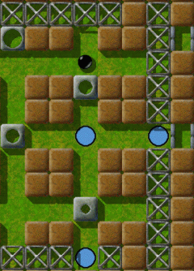
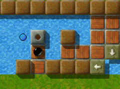
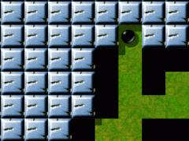
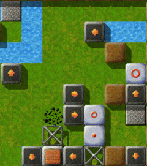
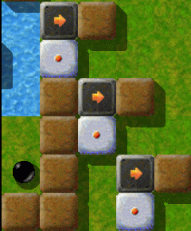

Level des MonatsJeden Monat werfen wir einen näheren Blick auf einen herausragenden Level. Herausragende Levels sind dabei solche, die sich durch die höchsten Bewertungen durch die Spieler auszeichnen, und dabei zugleich von genügend vielen Spielern auch bewertet wurden. Es ist also Ihre Wahl, die den Level des Monats bestimmt. Bitte werten Sie Levels, nachdem Sie sie gespielt haben, und vergessen Sie nicht, die Wertungen zusammen mit Ihren Spielergebnissen zum Ende eines jeden Monats uns zuzusenden. Sie können alle vorigen Level des Monats in unserem Archiv finden. Mai 2008: „Pleasure Garden“ von Jacob ScottMein Verhältnis zum „Lustgarten“ ist ein bisschen zwiespältig. Wenn's gut läuft, ist es wirklich eine Lust, entspannt durch den ganzen Garten zu schlendern. Hab ich allerdings einen schlechten Tag, erscheint er mir vielmehr wie eine Baustelle - so als wäre er noch in der Planung, aber noch nicht so richtig fertig. Wie stellen sich dann die einzelnen Teile dar - wo bitte sind denn die „Blumen“?

Enigma VI # 95
Am Anfang müssen erst mal ein paar Holzbohlen, die auch noch hinter einem löchrigen Zaun rumliegen, verlegt werden, um die Einfassung für den „kleinen Springbrunnen“ im See plazieren zu können. Bis ich raus hatte, wie das geht … Hatte mir wohl versehentlich eine der Holzbohlen vor den Kopf geklatscht ;-). Aber geschafft. Also ab in den nächsten Teil.

Der Springbrunnen im See.
Hab's mal wieder vermasselt! Wo steckt nur der Gärtner?! Wie sieht's denn hier aus? Werkzeugschuppen, Schalterraum, 'ne Masse Spaliere und drei unfertige „große Springbrunnen“, aber nur zwei Einfassungen. Zum Glück wächst an den Spalieren noch nichts hoch; denn sonst wäre kein Durchkommen zum Schuppen und Schalterraum. Doch bevor wir da reinkommen, müssen wir uns zunächst der „Springbrunnen“ annehmen. Jetzt ist auch der Schuppen offen. Mann, was herrscht da für ein Verhau, da sieht man gar nicht, wo man ist. … Ah, da ist das Werkzeug, einsacken, im Nebenraum noch den Schalter umlegen und raus aus diesem Teil des Gartens. Nachdem wir nun unser Werkzeug haben, können wir weiter. Das Werkzeug haben wir auch bitter nötig zum Freilegen des Weges, der „netterweise“ von einem tiefen Graben umgeben ist. Im folgenden Gartenabschnitt treffen wir auf ein Labyrinth, wo wir ausnahmsweise nicht nachbessern müssen. Zumindest kann man einen Blick auf ein paar „Blumen“ werfen. Also schauen wir mal, wie's weitergeht. Die beiden Ausgänge des Labyrinths führen uns weiter in einen Bereich, wo noch diverse Erdarbeiten mittels Sprengungen nötig sind. Doch bevor wir's krachen lassen, müssen wir noch zwei Holzbohlen (die eine lehnt an der Wand, die andere ist hinter einem Drahtzaun) über eine Grube legen. … Erledigt. „Ich freue mich wirklich, wenn ich so ein tolles Level gelöst habe!“Ich soll also was zu „Pleasure Garden“ sagen. Na
gut. Es ist ja schon eine Weile her, daß ich mich damit beschäftigt
habe. Es war ein tolles Level, daran erinnere ich mich, und als ich es spielte,
gab es, soweit ich weiß, noch so gut wie keine Lösungen.

Im Steinbruch -
Den Weg freilegen Hatten die anderen es nicht gefunden oder sich nur noch nicht
drangetraut? Ich traute mich jedenfalls und war wiedermal der festen
Überzeugung, daß es so schwer nicht sein könne. Klötzchen
an die richtige Stelle schieben, Tür öffnen, wegen der Bruchsteine
links wahrscheinlich einen Hammer finden, Steine weghauen, fertig. Von wegen.
Klötzchen schieben ging noch. Nach einigen Versuchen hatte ich es raus.
Tür auf. Hammer??
Aber sicher. Gut eingebettet in einem Haufen Einbahnsteine.
Und welches blaue Licht ist zuständig? Glaubt mir, auch ihr werdet unter
Garantie das falsche wählen. Das Hammerlicht ist das andere. Macht aber
nix, ist trotzdem noch gut lösbar.
Also wieder zurück, Steine kloppen. Jede Menge Steine.
Hast Du die Tür aufgeschlossen? Gut. Also weiter. Ein Winz-Labyrinth.
Für geübte Lab-Läufer kein Problem.
Weia, ein Minenfeld. Im original Oxyd-Handbuch steht: Bomben
können durch Überschieben gezündet werden. Na prima. Wenn ich
hier ein Klötzchen bewege, fliegt mir der ganze Raum um die Ohren. Hab ich
gedacht.
Nur, die vermaledeiten Bomben zünden nicht so, weder im
unteren Bereich, was ja noch ganz angenehm ist, aber auch nicht im oberen, wo es
hilfreich wäre. Aber man hat ja erstens Grips und zweitens einen
Zünder. Nachdem ich also zum wiederholten Male von vorn angefangen hatte,
hatte ich auch die Sache mit den Bomben kapiert.
Ein Boulder, soso. Ich setzte ihn in Bewegung und lauschte.
Lauschte meinem Untergang, sozusagen. Neustart. Diesmal war ich schneller. Alle
erreichbaren Oxyds anmachen und weiterhetzen. Spiegel. Super. Ich mag
Spiegellevels. Wenn ich Zeit habe, und die hatte ich hier nicht. Ich glaube, es
kostete mich noch mindestens 5 Neustarts, bis ich den letzten Oxyd zum leuchten
brachte. Es war toll. Und ich wurde wiedermal gefragt, ob alles mit mir in
Ordnung sei. Wieso versteht dieser Mann nicht, daß ich mich wirklich
freue, wenn ich so ein tolles Level gelöst habe?

Arbeitsunfall!
Hoffentlich zahlt die Lebensversicherung! Übrigens, ich hab damals eine recht gute Zeit hingelegt.
Heute morgen hab ich allein für die Klötzchen schon länger
gebraucht. Ist eben alles Übungssache.
Wir betreten einen weiteren Teil des Gartens. Und was ist das? Tatsächlich, hinter einem Erdwall sehen wir endlich unsere „Blumen“ schön aufgereiht. Tja, das Dumme ist nur, es gibt von hier keinen direkten Zugang. Um von hier wegzukommen, müssen einige der herumstehenden Planierraupen erst an die richtigen Stellen (wer hier seine Probleme hat, kann das in IV - #8 („Boulder-Puzzle“) vom selben Autor üben). Wird man überrollt, ist das eigentlich nicht so dramatisch, wenn man im vorigen Bereich vorausschauend war, wenn nicht dürfen wir Shift-F3 drücken. (Wer denkt beim ersten Mal an so was? Ich jedenfalls nicht.) Schließlich sind wir auch hier mit unseren kleineren Reparaturarbeiten fertig. Wir erreichen nun den Rest des Labyrinths. Der Weg, der zu den „Blumen“ führt, ist offensichtlich - zu offensichtlich? Mit ein wenig „Herumirren“ erreichen wir das letzte (wirklich? - ich kann's irgendwie nicht so ganz glauben) Hindernis: eine dieser Planierraupe blockiert von einem Brocken versperrt den Weg. Dahinter die ersten „Blumen“ und ein Schild, das sich von hier nur nicht entziffern lässt. Naja, der Planierraupe kann zur freien Fahrt verholfen werden, schubsen wir halt den Brocken weg. Halt! Werft zuerst mal einen Blick nach rechts. Da steht 'ne ganze Batterie von Planierraupen, die nur darauf warten loszulegen, 'ne Lampe für ein Gewächshaus inklusive Schalter. Was geht da ab?? Auf die Seite kommen wir auch nicht rüber, um uns das genauer anzusehen, also schauen wir mal …

Das Riesenuhrwerk -
Ein kleiner Ausschnitt Also an die Arbeit und den Brocken auf die Seite schieben. So, der Weg ist frei. Jetzt können wir auch lesen, was auf dem Schild steht: „Schnell“. Oh nein, zum Ende auch noch Stress. Da wir ja endlich bei den „Blumen“ sind, wird es schon nicht sooo schlimm werden. Hast du dir so gedacht. Zähl mal die Blumen, den kleinen Durchgang nach rechts nicht gesehen, die Gewächshauslampe und die doofen Planierraupen vergessen? :-> oder vielleicht .'P oder doch -/-, so geht's mir immer ab hier. Also schnell ins Gewächshaus und hier alles so einstellen, dass diese „Blume“ auch noch Licht bekommt. Apropos, warum ist die eigentlich so verbaut? Ist das vielleicht gar keine Blume sondern eine Pflanze, die der Gärnter für sich reserviert hat? Nein, natürlich nicht das, an was ihr jetzt denkt! … Egal. Für so was haben wir jetzt keine Zeit. Also schnell alle erreichbaren „Blumen“ pflücken. Eine bleibt zwar übrig, aber, wie gesagt, die kassiert sich der Gärtner, wenn sie genügend Licht hatte. Eigentlich sind die Aufgaben, die man im Lustgarten zu erledigen hat, im Einzelnen gar nicht so schwierig. Aber irgendwie macht's dann doch die Masse. Und der Schluss hat's wirklich in sich. Ich weiß nicht mehr, wie oft ich's im Gewächshaus verdaddelt habe, oder zur falschen Zeit die falschen Blumen gepflückt habe. Obwohl ich überhaupt kein Freund von Leveln bin, wo es auf Geschwindigkeit ankommt (sorry, aber eigentlich kann ich die Dinger nicht ausstehen), gibt das Ende von Lustgarten - als Gegenpol zum Rest - diesem meines Erachtens seinen ganz besonderen Reiz. Und hier ist, mit etwas Verzögerung, der Kommentar des Autors:„Pleasure Garden“ ist das Resultat meines ersten ernsthaften Versuchs,
den Stil der Original Oxyd Labyrinthe zu emulieren. Normalerweise
bestehen diese aus vielen miteinander verbundenen Räumen, ohne dass
zunächst ersichtlich ist, auf welche Weise der Level gelöst werden kann,
oder was der nächste Lösungsschritt ist. Der Level begann mir jedoch
bald etwas zu linear zu geraten, obwohl das in keiner Weise meine
Absicht war. Ich freute mich einfach nur darüber, einen Level zu bauen,
indem ich verschiedene meiner Lieblingspuzzletypen zusammenfügte. Weil
der Level sich aber so linear entwickelt hatte, beschloss ich, die
Anzahl der einzelnen Abschnitte auf ein vernünftiges Maß zu reduzieren,
nicht ganz so groß wie ich das ursprünglich geplant hatte (Level im
beabsichtigten Stil habe ich dann später konstruiert).
Ich wollte die Typen von Puzzles einbauen, die mir bei den Oxyd Spielen
immer am meisten Spass gemacht hatten: Boulder Puzzles, Bomben Puzzles,
Shogun Challenges, und sogar ein Labyrinth aus Einbahn-Steinen. Ich habe
den Level als eine Art Reise angelegt, durch eine Ansammlung von
interessanten Aufgaben, mit einer Abschlußprüfung, die es in sich hat.
Wie sich mittlerweise herausgestellt hat, gibt es einen Weg, dieses
ultimative Puzzle etwas einfacher zu bewältigen, aber aufgrund der
Schwierigkeit des Levels als Ganzes betrachtet, und der Zeit, die man
benötigt, um überhaupt erst so weit zu kommen, habe ich beschlossen,
nichts mehr zu verändern. Insgesamt habe ich den Level so konzipiert,
dass jeder Teil für sich allein genommen, einem einzelnen nicht
allzu schwierigen Level vergleichbar ist, dass aber die verschiedenen
Abschnitte insgesamt auch gut ineinandergreifen. Aus diesem Grund habe
ich auch für die meisten Abschnitte miteinander in Einklang stehende
Farbmuster verwendet, in einer ziemlich offen gestalteten Umgebung.
Ich denke, „Pleasure Garden“ ist mir ganz gut gelungen. Zur Zeit als ich
es geschrieben habe, war es wahrscheinlich einer der schwersten Level,
die ich bis dahin verfasst hatte (was jetzt natürlich nicht mehr ganz
zutrifft), und es war eigentlich ein Experiment, was ich in einem einzigen
Level so alles unterbringen könnte, ohne dass es zuviel würde.
Verglichen mit einigen aktuelleren Leveln (von meinen eigenen z.B.) ist
„Pleasure Garden“ ziemlich einfach, aber ich finde, es vermittelt immer
noch den Eindruck einer Reise durch eine offene und einladende Landschaft.
Auf jeden Fall steht Lustgarten in meinen Top 10 gaaanz weit oben. Vielen Dank an Jacob Scott für diesen geilen Level. NObby Liebe Leserin, lieber Leser, wir haben ein ständiges Bedürfnis nach Ihren Artikeln über Enigmas große Levels. Bitte, schicken Sie uns jeden Artikel, sogar Kommentare, die Sie geschrieben haben, an: enigma-devel@nongnu.org Wir sind besonders interessiert an Artikeln über die folgenden Levels:
Vielen Dank im voraus, nur Ihre Mithilfe kann den LdM am Leben erhalten! Ihr Enigma-Team |